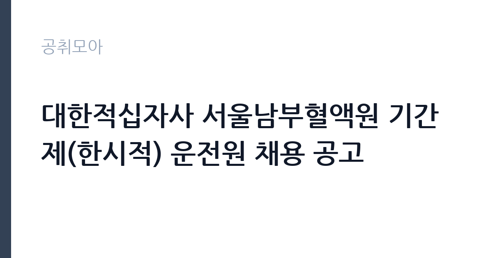

[공공기관] 대한적십자사 서울남부혈액원 기간제(한시적) 운전원 채용 공고
대한적십자사 · 서울 · 마감 2026-11-05 (D-15) · 출처 잡알리오

한눈에 보는 모집 조건
| 기관 | 대한적십자사 |
|---|---|
| 공고명 | 대한적십자사 서울남부혈액원 기간제(한시적) 운전원 채용 공고 |
| 고용형태 | 일용직 |
| 근무지 | 서울 |
| 게시일 | 2026-10-21 |
| 마감일 | 2026-11-05 (D-15) |
지원자격, 이렇게 읽으세요
- 공공기관 채용공시
- 세부 조건은 원문 공고문 확인
일용·단기 근로는 정해진 사업 기간이나 단기 업무를 위해 채용되는 형태입니다. 근무 일수와 일당이 정해지고 사업 종료 시 근로관계가 끝납니다. 계절 사업이나 행사 지원, 단기 대체 인력으로 활용되는 경우가 대표적입니다. 이번 공고는 대한적십자사에서 직접 진행하는 자체 전형으로, 응시자격과 제출서류는 공고문에 항목별로 제시됩니다. 운전 직무는 무엇보다 면허 종류와 실제 운전 경력이 기준입니다. 1종 보통 또는 1종 대형 면허를 요구하는 경우가 많고, 화물이나 버스 운전은 별도 자격이 필요합니다. 최근 3년 또는 5년 내 교통사고와 음주운전 이력이 없어야 한다는 조항이 자주 붙습니다. 운전 경력 증명서나 보험 가입 이력으로 이를 증빙해야 하므로 미리 발급받아 두십시오. 장거리 운행이 포함되면 건강 상태와 야간 운전 가능 여부도 확인합니다. 서류는 접수 마감 이후 보완이 되지 않으므로 자격 요건과 증빙 서류를 마감 전에 모두 갖춰야 합니다. 공고문에 명시된 우대 사항은 해당 여부를 확인해 증빙을 첨부해야 가점이 반영됩니다. 공고문의 응시자격 표를 보면 자격 항목이 여러 줄로 나뉘어 있으므로, 각 줄을 하나씩 체크하며 본인 해당 여부를 표시해 두면 누락을 줄일 수 있습니다.
이 공고의 포인트
이 공고의 첫 번째 포인트는 고용 형태입니다. 사업 기간에 맞춰 채용되므로 근무 일수와 보수가 비교적 명확합니다. 대신 다음 근무지를 별도로 구해야 합니다. 두 번째는 업무 범위가 명확하다는 점입니다. 운전 직무로 채용되므로 배치 이후 담당 업무가 크게 흔들리지 않습니다. 세 번째는 근무지입니다. 서울 지역 근무로 접근성은 좋지만 그만큼 지원자가 몰리는 지역이므로 경쟁률을 넉넉히 잡아야 합니다. 선발 절차가 단순한 편이어서 서류와 면접 준비에 집중할 수 있습니다. 같은 직무로 함께 올라온 공고 가운데 접수 마감이 가장 늦은 편이라 준비 시간을 상대적으로 확보할 수 있습니다. 선발 인원은 공고문에 명시되어 있으니 모집분야 항목을 함께 확인하십시오.
전형은 어떻게 진행되나
1차 서류, 2차 면접의 2단계로 진행되는 구성이 일반적입니다. 서류에서는 자격 요건과 경력 증빙을 확인하고, 면접에서는 실제 업무 수행 능력과 조직 적응을 봅니다. 직무에 따라 필기시험이나 실기, 컴퓨터 활용 시험이 추가되기도 하므로 공고문의 전형표를 먼저 확인하십시오. 단계별로 합격자만 다음 전형에 응시할 수 있고, 단계마다 응시 자격 확인 서류를 다시 제출해야 하는 경우가 있습니다. 최종합격자 발표 후에는 신원조회와 채용 신체검사가 남아 있습니다. 전형 일정이 공고문에 날짜로 명시되어 있으니 달력에 옮겨 두고 준비하십시오.
원문에서 확인한 전형 방식
○ 제1종 대형 운전면허소지자 ○ 대한적십자사직원운영규정 제56조(정년)에 의거 임용예정일(’26.12.1.)기준 만 60세 미만인 자 ○ 임용예정일(’26.12.1.)부터 근무 가능한 자 ○ 병역법 제76조에 따른 병역의무 불이행자에 해당하지 않는 자 ○ 대한적십자사직원운영규정 제20조(결격사유)에 해당되지 않는 자
이런 분께 추천해요
- 요구 면허를 보유하고 운전 경력이 충분한 분
- 교통사고·음주운전 이력이 없는 분
- 차량 점검과 운행 기록을 성실히 관리하는 분
지원 전 체크리스트
- 응시자격 요건과 경력 기준을 충족하는가 — 경력은 증명서로 입증해야 합니다
- 근무 기간과 일당·월급 지급 방식을 확인했는가
- 제출서류 목록을 모두 준비했는가 — 누락 시 서류 단계에서 탈락합니다
- 접수 마감 2026-11-05 이전에 접수 방식을 확인해 제출했는가
모집 일정과 제출 타이밍
2026-10-21에 공고가 올라왔고 접수는 2026-11-05까지입니다. 남은 기간은 15일이며, 이 기간에 자격증 사본과 경력증명서, 주민등록등본 같은 기본 서류를 모두 준비해야 합니다. 경력증명서는 발급에 며칠이 걸리는 경우가 있으니 가장 먼저 신청하십시오. 접수는 온라인과 우편·방문으로 나뉘는 경우가 많고, 우편 접수는 도착 기준으로 판정되므로 마감일 소인만 믿으면 안 됩니다. 면접 일정은 서류 발표 후 개별 통보되므로 제출 후에도 연락을 받을 수 있도록 유지해야 합니다. 제출 서류는 공고문에 적힌 순서대로 정리하면 담당자가 확인하기 쉬워 누락이 줄어듭니다. 서울 근무지는 대중교통 접근성이 좋은 대신 주차와 통근 시간이 변수입니다. 출퇴근 경로를 미리 확인하십시오. 마감까지 여유가 있어 자격 요건을 천천히 확인하고 준비할 수 있습니다. 선발 인원은 공고문의 모집분야 항목에 직종별로 제시되어 있습니다.
직무 이해하기: 공공기관
대한적십자사는 인도주의 사업과 혈액 사업, 재난 구호를 수행하는 법정 특수법인입니다. 혈액원은 헌혈과 혈액 제조·공급을 맡고 운전과 시설 관리 인력을 별도로 운영합니다. 운전 직무는 기관 차량을 운행해 사람이나 물품을 옮기는 일입니다. 출발 전 차량 상태와 연료, 안전 장비를 점검하고 운행 일지를 기록합니다. 업무용 승용차, 승합차, 화물차, 청소 차량 등 담당 차량에 따라 필요한 면허가 달라집니다. 목적지와 시간이 매일 달라지므로 일정 관리와 대기 시간이 업무의 상당 부분을 차지합니다. 사고 예방과 차량 관리, 승객 응대 태도가 평가에 포함됩니다. 업무는 혼자 처리하기보다 부서 단위로 나눠 진행되므로 담당 구역과 협업 범위를 입사 초에 확인하는 것이 중요합니다. 현장 업무와 사무 업무의 비중은 기관의 사업 일정에 따라 계절별로 달라집니다.
자기소개서 작성 팁
운전 지원서의 핵심은 무사고와 책임감입니다. 운전 경력 연수, 주행 거리, 무사고 기간을 수치로 제시하십시오. 차량 점검을 습관적으로 해온 방식이나 위험 상황에서 사고를 피한 경험을 구체적으로 쓰면 설득력이 높아집니다. 승객이나 이용자 응대 경험이 있다면 서비스 태도의 근거로 연결하십시오. 직무 경험이 많지 않다면 경험의 양보다 과정을 구체적으로 쓰는 편이 낫습니다. 어떤 상황에서 무엇을 판단했고 어떤 결과가 나왔는지 순서대로 서술하면 신뢰가 생깁니다. 지원 동기와 기여 방안은 한 문단씩 짧게 유지하고, 가장 자신 있는 경험에 분량을 몰아주십시오. 마지막 문장은 포부보다 구체적인 실행 계획으로 끝내는 것이 좋습니다.
면접 준비 포인트
면접에서는 안전 운전 습관과 상황 대응을 봅니다. 사고가 났을 때 어떤 순서로 조치할지, 승객이 시간을 지키지 않을 때 어떻게 대응할지, 차량 고장 시 어떻게 처리할지 묻습니다. 차량 관리 기록을 어떻게 해왔는지 구체적으로 답하면 신뢰를 줍니다. 무사고 경력과 장거리 운행 경험은 강점입니다. 답변은 상황, 판단, 조치의 순서로 정리하면 전달이 분명해집니다. 모르는 질문에는 모른다고 밝히고 확인 방법을 제시하는 편이 억지 답변보다 낫습니다. 마지막에는 근무 의사와 함께 2026-11-05 이후 일정에 언제든 응할 수 있다는 점을 전달하십시오. 면접 당일 신분증과 제출서류 원본을 요구하는 경우가 있으니 공고문의 준비물 목록을 확인하십시오.
급여·근무조건 읽는 법
운전 직무의 보수는 기관 임금표에 따른 기본급과 각종 수당으로 구성되며, 장거리·야간 운행이 있으면 여비와 초과근무수당이 추가됩니다. 무기계약직이면 정년까지 근무가 가능하고 기간제라면 계약 기간이 정해집니다. 2026년 최저임금은 시급 10,320원, 월 환산 2,156,880원이므로 최소 기준으로 확인하십시오. 차량 유지와 유류비를 기관이 부담하는지 공고문에서 확인해야 합니다. 세부 금액은 원문 보수표에 있습니다. 2026년 적용 최저임금은 시급 10,320원, 월 환산 2,156,880원(주 40시간·209시간 기준)입니다. 고용노동부 고시 제2025-47호로 확정된 금액입니다. 공고문에 금액이 제시되지 않은 항목은 원문 보수표나 처우 설명에서 확인해야 하며 확인되지 않은 수치는 쓰지 않는 것이 원칙입니다. 비교할 때는 월 급여뿐 아니라 상여·명절휴가비·복지포인트·초과근무수당까지 포함한 연간 총액으로 계산하십시오. 기간제라면 계약 기간 동안의 총액을, 무기계약이라면 호봉 상승과 정년까지의 누적 소득을 기준으로 판단하는 편이 정확합니다.
자주 묻는 질문
- 선발 인원은 몇 명인가요?
공고문의 모집분야 항목에 직종별 인원이 표로 제시되어 있습니다. 첨부된 공고문 원문에서 확인하십시오. - 근무지는 어디인가요?
서울 지역의 대한적십자사 소속 근무지입니다. 세부 주소와 출퇴근 조건은 원문 공고문에서 확인할 수 있습니다. - 보수는 얼마인가요?
채용 신분(일용·단기)과 기관 임금 규정에 따라 정해지며 구체적인 금액은 공고문 처우 항목에 제시됩니다. 금액이 공개되지 않은 경우에는 원문의 보수표를 확인하십시오.
함께 보면 좋은 공고
[공공기관] 2026년도 업무지원직(시설지원직) 신규직원 블라인드 공개채용 모집 공고 — 마감 2026-11-05[공공기관] 2026년 제1차 새울원자력본부 기간제근로자 채용 — 마감 2026-11-06[공공기관] 한국기술교육대학교 고용서비스인재교육추진단 연구원 채용 공고 — 마감 2026-11-08출처: 잡알리오 공개정보를 바탕으로 공취모아가 정리한 안내글입니다. 모집 조건·일정은 변경될 수 있으니 지원 전 반드시 원문 공고문을 확인하세요. 본 글은 정보 제공용이며 합격을 보장하지 않습니다.